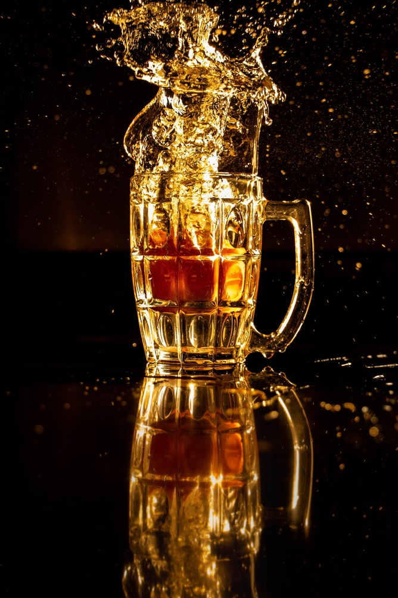

Frequently asked questions

Top 5 questions people ask about beer
- When was beer invented?
Beer can trace its roots as far back as Mesopotamia – 5th millennium B.C. or older.
- How do I make beer?
With hops, barley and patience!
- How many calories are in a beer?
We could go all day on this one, but a couple examples include: Guinness: 153; Heineken: 150; Corona: 148.
- Which country drinks the most beer?
the Czech Republic consumes 156 liters of beer per capita, more than any other country, followed by Ireland
and Germany.
- How long does beer stay in your system?
On average, 6 – 10 hours.